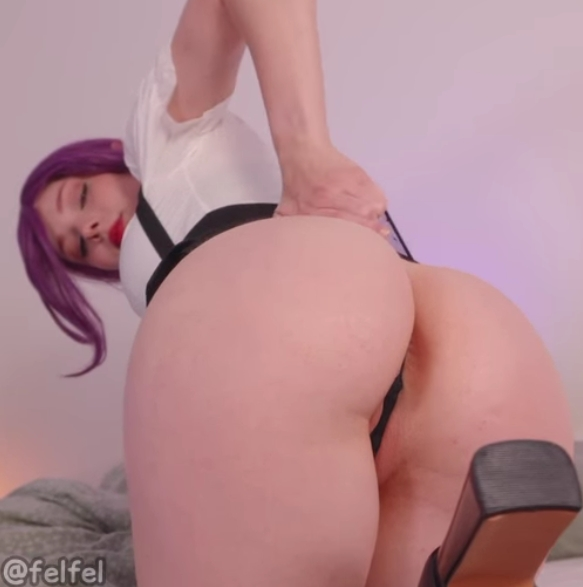

مؤقت الدراسة الذكي
25:00
جاهز لبدء جلسة المذاكرة
بدء
إيقاف
إعادة
⚙️ إعدادات الخلفية
اختر صورة من معرض هاتفك
استعادة الخلفية الأصلية
🖼️ اختر الخلفية

➕ تكبير الخلفية
➖ تصغير الخلفية
شفافية المحتوى:
شفاف جداً
متوسط
واضح كلياً
👁️ معاينة الخلفية فقط